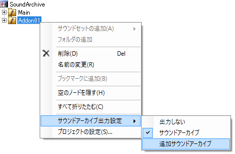
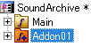

目次
追加サウンドアーカイブ機能
追加サウンドアーカイブとは、通常のサウンドアーカイブ（以降、メインサウンドアーカイブと記載）と組み合わせることで、
サウンドアイテムを追加することのできるサウンドアーカイブです。
メインサウンドアーカイブを使用したまま必要なサウンドアイテムの追加や削除ができるようになるため、
特定の場面でのみ必要とされるサウンドや、 追加コンテンツに含まれるサウンドでの使用に適しています。
以下では、追加サウンドアーカイブの仕様と、使い方についての解説を行います。
追加サウンドアーカイブの設定方法
- 追加サウンドアーカイブにしたいサウンドセットを新規に追加します
- サウンドセット上で右クリック→「サウンドアーカイブ出力設定」→「追加サウンドアーカイブ」をクリックし、
出力時に追加サウンドアーカイブで出力されるように設定します
(出力設定は、プロジェクトの設定ダイアログの「サウンドアーカイブ設定２」タブでも変更することができます)

- 追加サウンドアーカイブで出力されることになったサウンドセットは、以下のように表示されます。

元に戻したい場合は、 2 でサウンドアーカイブを選択することで、サウンドアーカイブでの出力に戻すことができます
- 後は通常通り、サウンドを追加してコンバートすることで、追加サウンドアーカイブでの出力が行われます
(追加できるアイテムには、「追加サウンドアーカイブの仕様」の項に書かれている制限があります)
参考：
追加サウンドアーカイブを使用する場合、文字列テーブルを出力する必要があります。
文字列テーブルを出力する設定に関する詳細は、 オプション設定 の「サウンドアーカイブ設定」の項をご確認ください。
追加サウンドアーカイブの仕様
追加サウンドアーカイブのアイテムの扱いに関しては、 「ガイド／追加サウンドアーカイブ」のページをご参照ください。